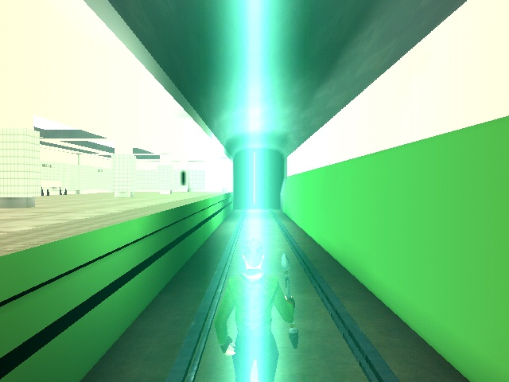
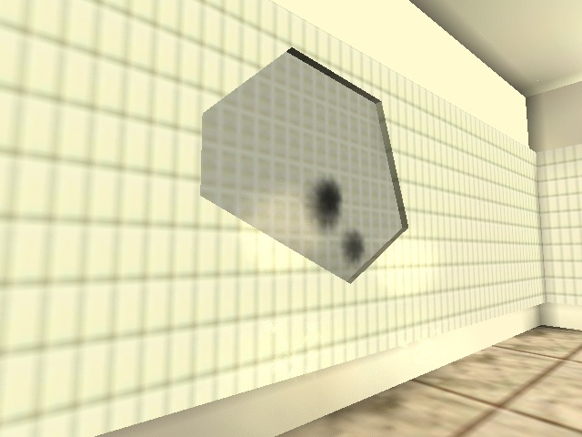
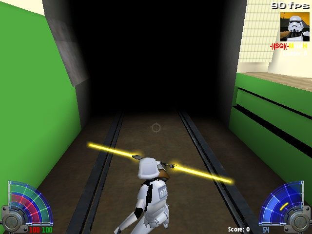
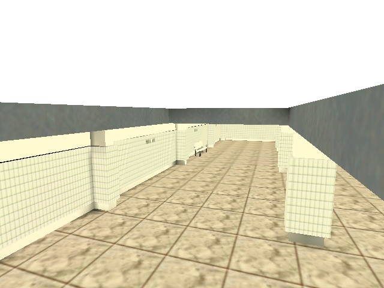
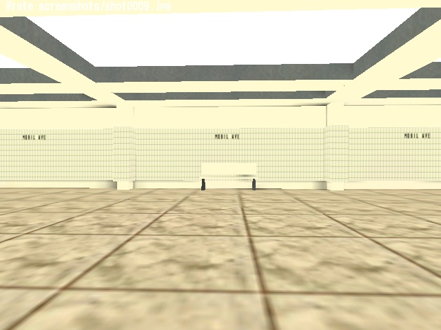
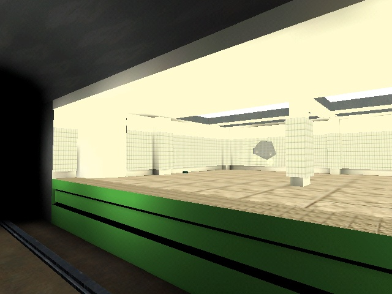

MATRIX: MOBIL AVE DUEL


MATRIX: MOBIL AVE DUEL
This map is based on Matrix Revolutions film
Players fights at platform of subway station.
There are two teleporters that let's players
don't go
inside the tunnel
(Neo couldn't do this, too)
There is one destuctable part of wall
in place where Neo was pushed by a trainman.
Destroys when duelist is near





